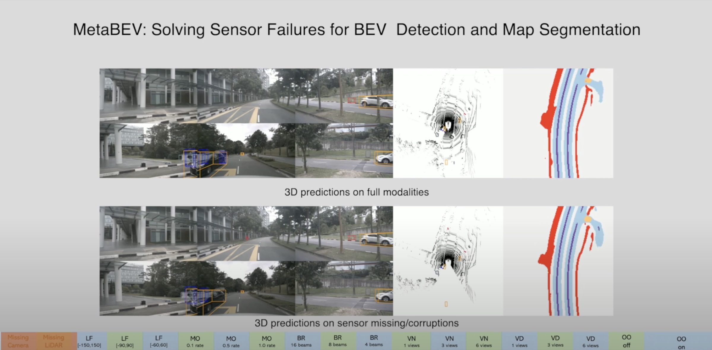
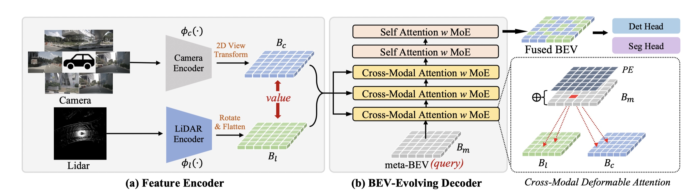
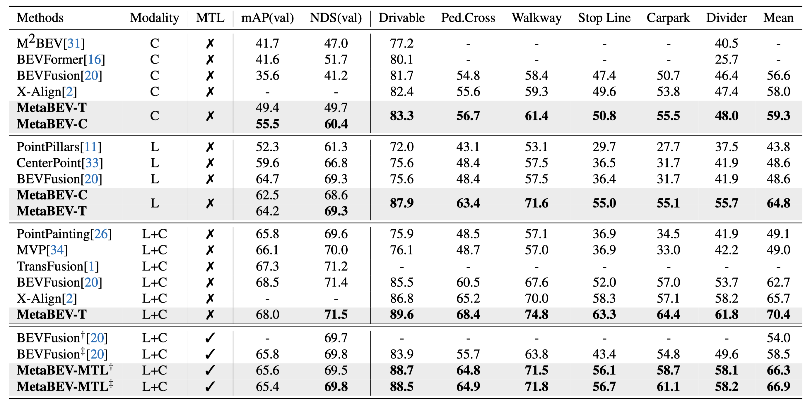
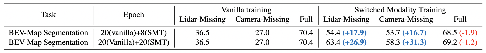
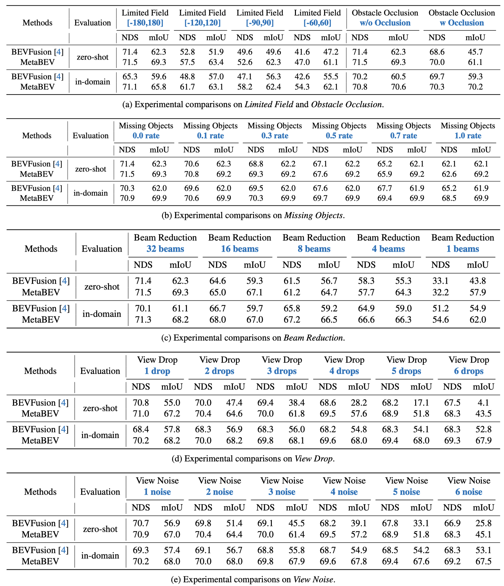

MetaBEV: Solving Sensor Failures for BEV Detection and Map Segmentation

Abstract
Perception systems in modern autonomous driving vehicles typically take inputs from complementary multi-modal sensors, e.g., LiDAR and cameras. However, in real-world applications, sensor corruptions and failures lead to inferior performances, thus compromising autonomous safety.
In this paper, we propose a robust framework, called MetaBEV, to address extreme real-world environments, involving overall six sensor corruptions and two extreme sensor-missing situations. In MetaBEV, signals from multiple sensors are first processed by modal-specific encoders. Subsequently, a set of dense BEV queries are initialized, termed meta-BEV. These queries are then processed iteratively by a BEV-Evolving decoder, which selectively aggregates deep features from either LiDAR, cameras, or both modalities. The updated BEV representations are further leveraged for multiple 3D prediction tasks. Additionally, we introduce a new M2oE structure to alleviate the performance drop on distinct tasks in multi-task joint learning.
Finally, MetaBEV is evaluated on the nuScenes dataset with 3D object detection and BEV map segmentation tasks. Experiments show MetaBEV outperforms prior arts by a large margin on both full and corrupted modalities. For instance, when the LiDAR signal is missing, MetaBEV improves 35.5% detection NDS and 17.7% segmentation mIoU upon the vanilla BEVFusion model; and when the camera signal is absent, MetaBEV still achieves 69.2% NDS and 53.7% mIoU, which is even higher than previous works that perform on full-modalities. Moreover, MetaBEV performs fairly against previous methods in both canonical perception and multi-task learning settings, refreshing state-of-the-art nuScenes BEV map segmentation with 70.4% mIoU.
Method

Experiments



Citation
@inproceedings{ge2023metabev,
title = {MetaBEV: Solving Sensor Failures for BEV Detection and Map Segmentation},
author = {Ge, Chongjian and Chen, Junsong and Xie, Enze and Wang, Zhongdao and Hong, Lanqing and Lu, Huchuan and Li, Zhenguo and Luo, Ping},
booktitle = {Proceedings of the IEEE/CVF International Conference on Computer Vision (ICCV)},
year = {2023}
}